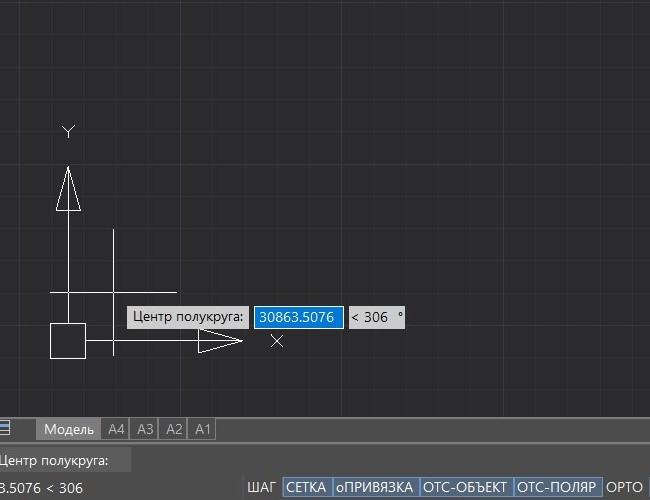
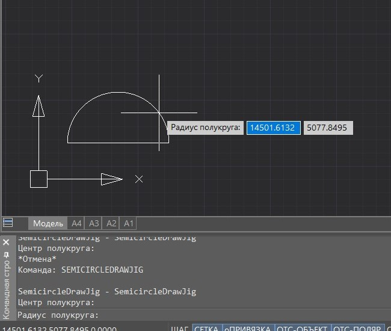
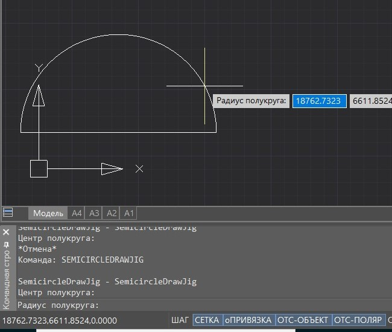
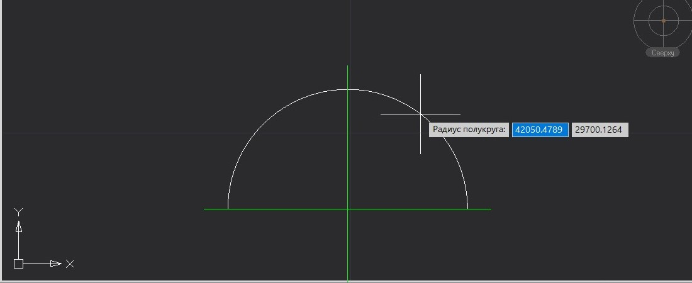
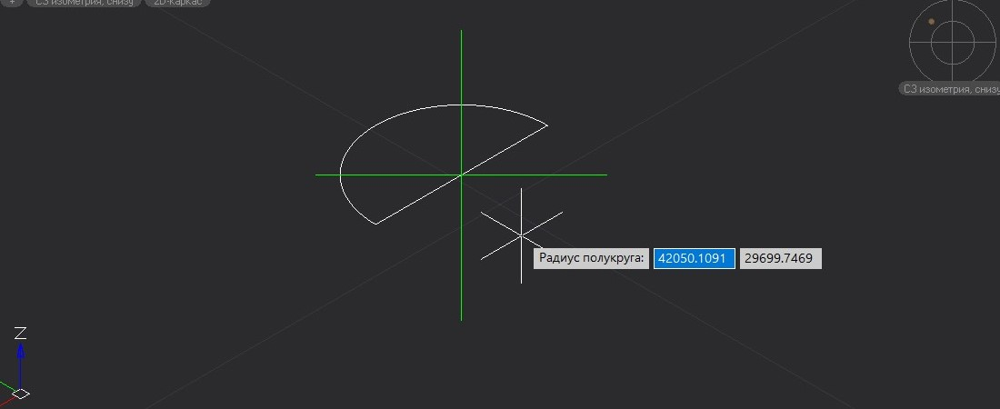
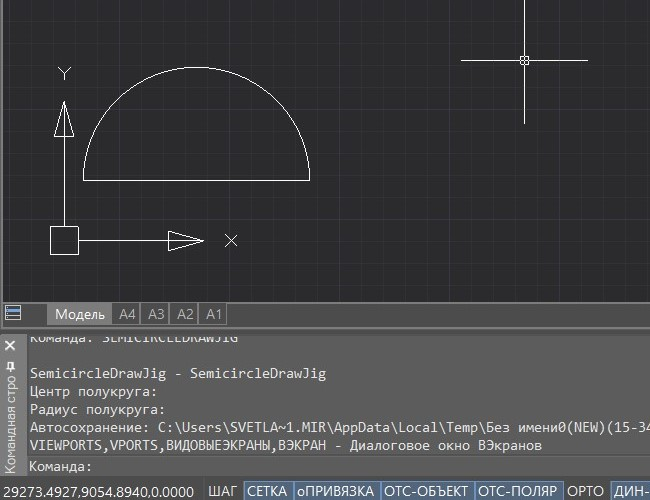

Свернуть все
Свернуть все Развернуть все
Развернуть все|
Справочное руководство .NET API
|
    
Закрыть
|
|
Как использовать технологию DrawJig
Свернуть всеРазвернуть все|
Справочное руководство .NET API
|
Закрыть
|
|
Технология позволяет создавать произвольную графику непосредственно на экране путем указания курсором мыши начальной точки на экране и перетаскивания курсора мыши (далее технология Jig).
ОписаниеТехнология позволяет создавать произвольную графику или одновременно несколько пользовательских примитивов в виде цельного графического объекта непосредственно на экране путем указания курсором мыши начальной точки на экране и перетаскивания курсора мыши (далее технология Jig). При этом на экране будет отображаться предпросмотр создаваемого объекта.
Пример
Шаги, которые нужно выполнить, чтобы реализовать команду построения произвольной графики или группы пользовательских примитивов как цельного графического объекта с помощью технологии Jig:
Результатом работы приведенного ниже примера будет построение полукруга, состоящего из двух пользовательских примитивов: дуги (Arc) и линии (Line).
Алгоритм работы приведенного примера:





